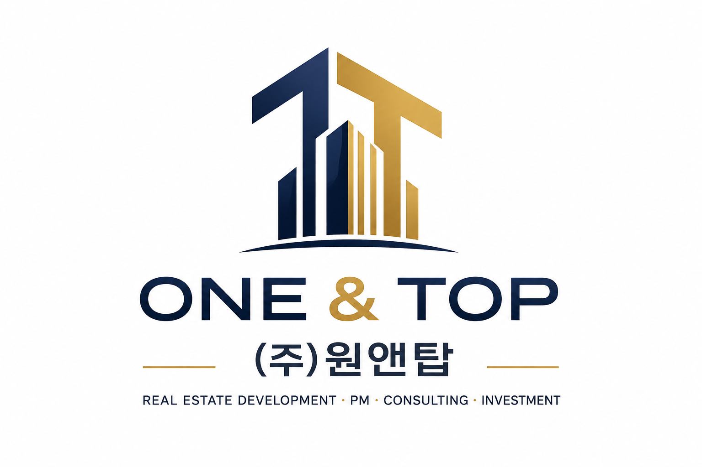

REAL ESTATE DEVELOPMENT
부동산 개발 · 시행
사업부지 발굴부터 개발구상, 사업성 검토 및 시행까지.

(주)원앤탑은 부동산과 도시가 가진 잠재적 가치를 발굴하고, 이를 실현 가능한 사업으로 만들어가는 부동산 개발 전문기업입니다.
사업부지 발굴과 개발기획, 사업성 검토, 시행, 프로젝트 매니지먼트(PM), 도시개발·재개발 컨설팅, 투자유치 및 사업 파트너십 구축까지 개발사업 전반을 아우르는 서비스를 제공합니다.
사업부지 발굴부터 개발구상, 사업성 검토 및 시행까지.
기획, 인허가, 금융, 설계, 시공 등 프로젝트 전 과정 관리.
사업성 분석과 최적의 개발방향 및 추진전략 수립.
투자자, 금융기관 및 전략적 파트너를 연결한 사업구조 구축.
토지 · 개발기획 · 인허가 · 금융 · 설계·시공 · 투자를 연결하여 프로젝트의 가능성을 현실적인 사업으로 만듭니다.
부동산 개발사업 · 도시개발 · 재개발 · 프로젝트 PM · 투자 · 공동사업 제안
TEL [1833-5029]
E-MAIL [onentop@naver.com]
ADDRESS [부천시 원미구 상동로87 8층 8103-6105]